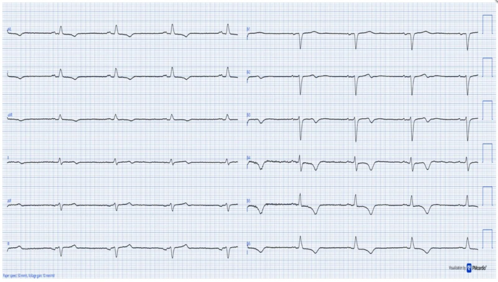
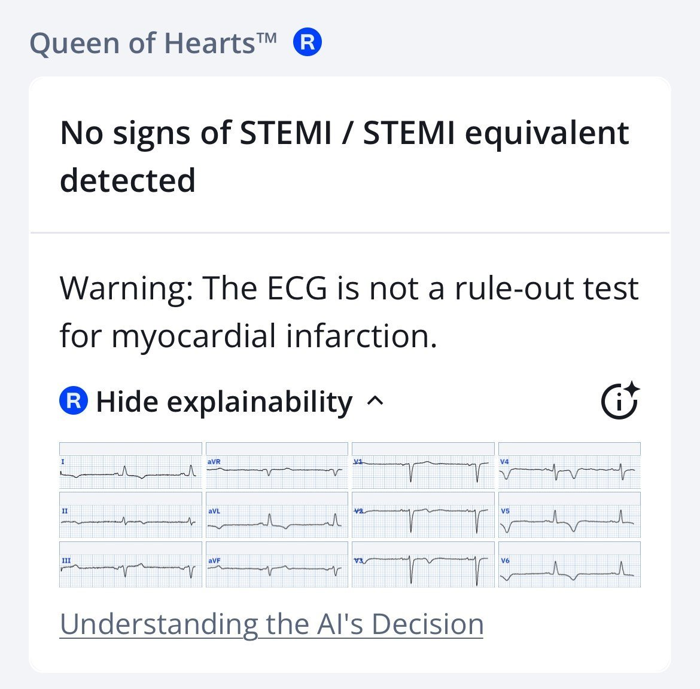
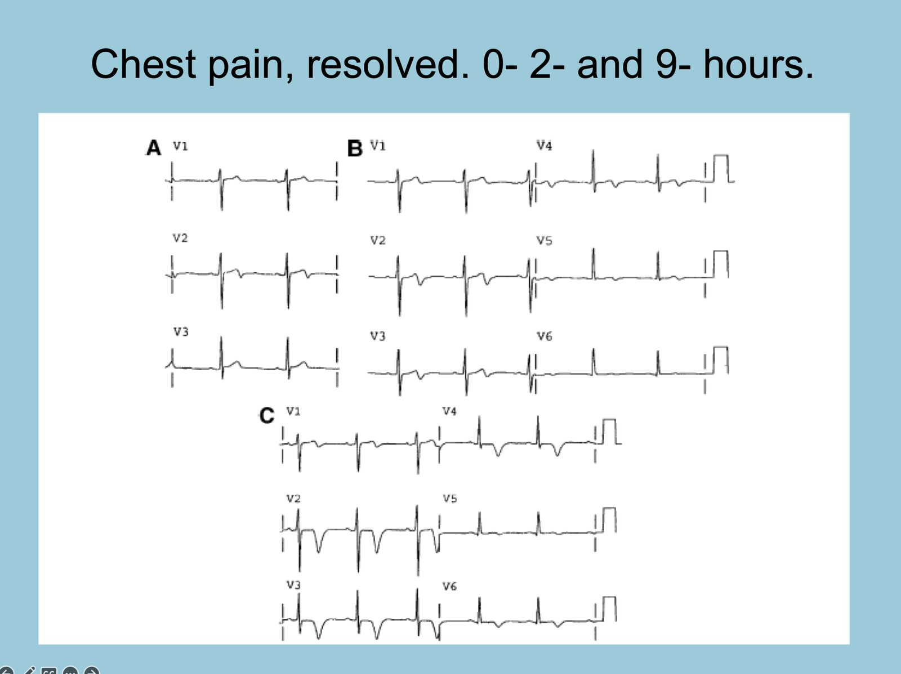
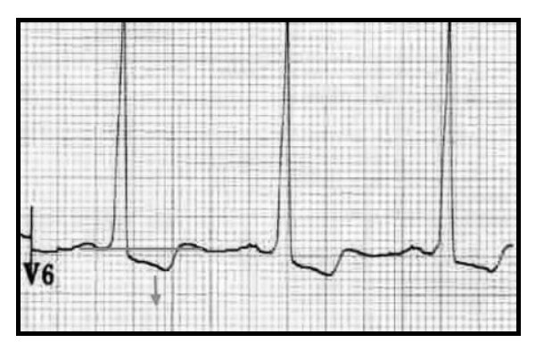
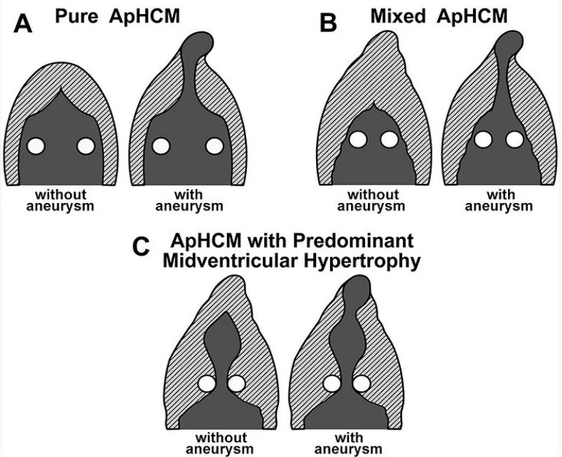
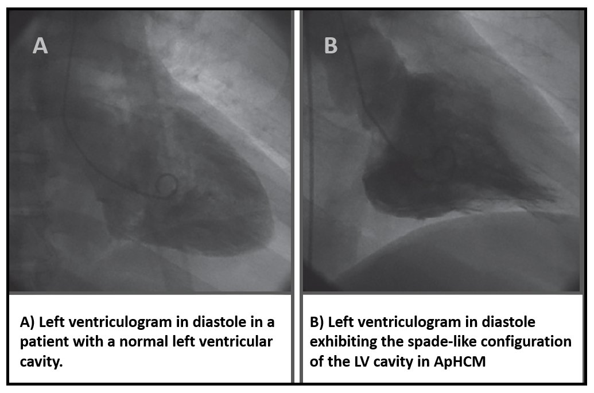
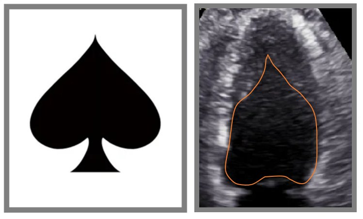
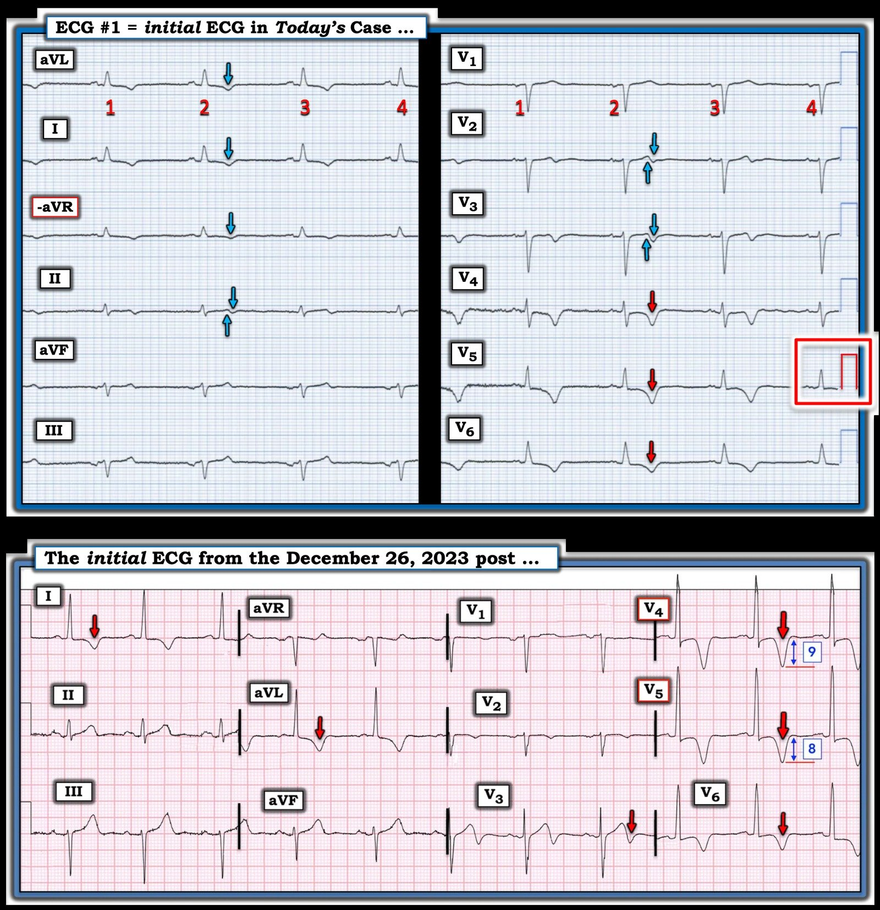

27/04/2026 — Bạn nghĩ gì về những sóng T đảo ngược này?
Bản dịch tiếng Việt của bài "What do you make of these T wave inversions?" – Dr. Smith’s ECG Blog. Giữ nguyên toàn bộ 9 hình ảnh và 1 video của bản gốc.


Tác giả: Magnus Nossen
Bệnh nhân hôm nay là một nam giới 77 tuổi thừa cân, mắc COPD và CKD giai đoạn 5 (bệnh thận mạn) — đang được đánh giá để ghép thận. Tiền sử bệnh có nhồi máu cơ tim do tắc (OMI) nhánh bờ tù, đã được điều trị bằng can thiệp mạch vành qua da (PCI) bốn năm trước. Sau cơn nhồi máu cơ tim đó, bệnh nhân được siêu âm tim và phát hiện có huyết khối ở mỏm thất trái. Sau khi điều trị bằng warfarin, huyết khối đã tan hết.
Trong khuôn khổ đánh giá trước ghép — bệnh nhân được chuyển đi chụp động mạch vành (CAG). Bệnh nhân không đau ngực — và hoàn toàn không có triệu chứng vào thời điểm ghi điện tâm đồ lúc nhập viện (ở dưới).
Bạn nghĩ gì về những sóng T đảo ngược này?
Điện tâm đồ ghi lúc nhập viện

Điện tâm đồ này ban đầu được ghi với tốc độ giấy 50mm/s. Ở đây nó đã được “nén” theo trục X để trông như được ghi ở tốc độ 25mm/s. Cách bố trí theo định dạng Cabrera (Xem bình luận của Dr. Grauer trong bài ngày 26 tháng Mười năm 2020 trên Dr. Smith’s ECG Blog để ôn lại về định dạng Cabrera).
Các dữ kiện lâm sàng hôm nay không gợi ý nhồi máu cơ tim do tắc (OMI). Điện tâm đồ ở trên cho thấy sóng T đảo ngược (TWI) lan rộng, giống như có thể thấy trong OMI đã tái tưới máu. Trí tuệ nhân tạo Queen of Hearts sẽ gắn cờ ‘OMI đã tái tưới máu’ khi “bà” cho rằng các TWI là do tái tưới máu. Trong ca này, mô hình AI đã xác định đúng rằng các TWI này KHÔNG phù hợp với tái tưới máu.
Smith: điều quan trọng là chỉ nên nghi ngờ tái tưới máu khi có bối cảnh lâm sàng phù hợp, thường là đau ngực đã hết hoặc đang giảm dần. Điện tâm đồ này chỉ được ghi trong khuôn khổ đánh giá trước phẫu thuật.


Smith: hãy so sánh các sóng T đảo ngược ở trên với diễn tiến kinh điển này của sóng Wellens:


Đâu là lời giải thích hợp lý nhất cho những thay đổi trên điện tâm đồ và tiền sử bệnh của bệnh nhân?
Điện tâm đồ trong ca hôm nay cho thấy nhịp chậm xoang @50 lần/phút. QRS hẹp. Đáng chú ý là sóng T đảo ngược ở nhiều chuyển đạo, rõ nhất ở các chuyển đạo trước bên V4-V6. Không hiếm gặp bệnh nhân CKD có TWI như một phần của thay đổi tái cực thứ phát do phì đại thất trái. Vì vậy — rất dễ bỏ qua các TWI này, coi là không đặc hiệu và giải thích chúng bằng LVH.
Theo kinh nghiệm của tôi, bệnh nhân LVH do phì đại đồng tâm không có hình thái ST-T như thấy trong ca hôm nay. Xem hình dưới đây để thấy một hình ảnh tăng gánh (strain) điển hình của LVH.
Hình ảnh “tăng gánh” điển hình gặp trong LVH


Bệnh nhân này từng bị OMI nhánh bờ tù. Tuy nhiên, vì nhánh bờ của động mạch mũ trái không cấp máu cho mỏm thất trái, nên nhồi máu ở động mạch này sẽ không được dự đoán là gây giảm động vùng mỏm dẫn tới hình thành huyết khối ở vị trí đó.
Huyết khối trong buồng thất thường hình thành ở những vùng thành thất giảm động, vô động hoặc loạn động. Các nguyên nhân hay gặp nhất gồm OMI hoặc bệnh cơ tim do stress, cả hai đều gây rối loạn vận động thành khu trú và có thể tạo thuận lợi cho huyết khối hình thành sau đó. Ngoài ra, rối loạn chức năng tâm thu nặng với dòng chảy trong buồng thất giảm rõ cũng có thể tạo thuận lợi cho huyết khối hình thành.
Có một vài bệnh lý khác liên quan tới huyết khối trong buồng thất. Điều thú vị là các thay đổi ST-T trong ca hôm nay rất gợi ý một trong những căn nguyên ít gặp hơn này.
- Sau khi xem lại hồ sơ bệnh án và đánh giá điện tâm đồ lúc vào viện — bệnh nhân được chuyển đi siêu âm tim. Dưới đây, tôi đưa vào một mặt cắt mỏm tập trung vào thất trái. Bạn thấy gì?
Thất trái nhìn từ mặt cắt mỏm
Đoạn phim siêu âm tim này cho thấy một mặt cắt tập trung vào thất trái. Mỏm thất trái nằm ở phía trên của hình (gần đầu dò nhất), còn đáy thất trái và van hai lá nằm gần phía dưới của hình. Như bạn thấy, cơ tim KHÔNG phì đại lan tỏa như người ta sẽ chờ đợi nếu phì đại là thứ phát do tăng huyết áp (HTN) từ CKD. Thay vào đó — có phì đại không đối xứng khu trú ở vùng mỏm.
Bàn luận
Siêu âm tim đã khẳng định chẩn đoán được nghi ngờ trong ca hôm nay. Bệnh nhân này bị bệnh cơ tim phì đại mỏm (Apical Hypertrophic CardioMyopathy, ApHCM). Khi thấy điện tâm đồ — tôi nghĩ ngay đến bệnh lý này nhờ “nhận dạng hình ảnh” (pattern recognition). Tôi càng tin hơn rằng nhiều khả năng là ApHCM khi xem lại tiền sử — vì huyết khối mỏm sau một OMI nhánh bờ tù là điều không được dự đoán. Ngược lại, ApHCM có liên quan tới huyết khối mỏm.
HCM thể mỏm có hình ảnh điện tâm đồ rất đặc trưng do phần phì đại tập trung ở vùng mỏm thất trái. Thường có tiêu chuẩn điện thế. Bệnh nhân trong ca hôm nay bị COPD và thừa cân, điều này nhiều khả năng góp phần làm biên độ QRS thấp hơn mong đợi ở một bệnh nhân ApHCM. Để xem thêm các ca ApHCM, hãy xem bài ngày 26 tháng Mười Hai năm 2023 trên Dr. Smith’s ECG Blog — cũng như CA NÀY. Để xem một ví dụ khác về LVH, hãy xem bài ngày 8 tháng Mười năm 2009.
Một số thông tin về HCM (thể mỏm)
Bệnh cơ tim phì đại (Hypertrophic CardioMyopathy, HCM) chỉ một nhóm đa dạng các rối loạn cơ tim, theo truyền thống được xác định bằng phì đại thất trái (LVH) trên siêu âm tim, mà không có điều kiện tải bất thường của tim. Dù ban đầu được mô tả theo hình thái — HCM hiện được công nhận là chủ yếu do các đột biến trội trên nhiễm sắc thể thường ở các gen mã hóa protein sarcomere. Bệnh cơ tim phì đại mỏm (ApHCM) là một biến thể của HCM, trong đó phần dày lên chủ yếu ở mỏm tim. Bệnh thường gặp hơn ở các quần thể châu Á (tới 40% số ca HCM) và ít gặp hơn ở các quần thể phương Tây (~8% số ca HCM).
ApHCM thường được chẩn đoán muộn hơn trong đời. Kết cục của bệnh thay đổi — nhìn chung nguy cơ tử vong thấp hơn so với HCM điển hình. Nam giới mắc nhiều hơn, và triệu chứng có thể từ nhẹ đến nặng. Trong HCM có nhiều kiểu LVH — bao gồm nhưng không giới hạn ở HCM vách không đối xứng kinh điển (còn gọi là HCM tắc nghẽn), HCM đồng tâm, và thể mỏm (ApHCM). Cũng có những biến thể hiếm như LVH đơn độc ở thành bên hoặc vùng dưới-vách.
Sơ đồ minh họa các típ ApHCM khác nhau


ApHCM được mô tả lần đầu năm 1979 bởi Yamaguchi và cs..(1) Yamaguchi đã xem lại phim chụp buồng thất ở những bệnh nhân mắc rối loạn này, và nhận thấy buồng thất trái có hình quân bích (spade-like) ở một loạt bệnh nhân mà điện tâm đồ đặc trưng bởi sóng T âm “khổng lồ”. Theo tên người mô tả, ApHCM đôi khi được gọi là bệnh cơ tim Yamaguchi. So với HCM kinh điển, ApHCM xuất hiện rải rác (tản phát) nhiều hơn, ít đột biến sarcomere hơn, và có tỷ lệ rung nhĩ cao hơn. ApHCM không hiếm như từng nghĩ ban đầu — chiếm tới 25% số ca HCM ở các quần thể châu Á, và 1% đến 10% ở người không phải châu Á (2).
Trong một nghiên cứu về ApHCM trên 105 bệnh nhân — 94% có điện tâm đồ bất thường với tiêu chuẩn điện thế của LVH (65%) và sóng T đảo ngược (93%), nhưng chỉ 47% có sóng T âm khổng lồ (3).
Phim chụp buồng thất với buồng thất hình quân bích


Biểu tượng quân bích và ảnh tĩnh từ đoạn siêu âm tim ở trên.


Ở trên: Bên trái: biểu tượng quân bích. Bên phải: ảnh tĩnh từ đoạn siêu âm tim ở trên. Lòng thất trái được viền bằng màu cam. Theo kinh điển, hình quân bích thấy ở cuối tâm trương, nhưng một số bệnh nhân ApHCM có xơ hóa nội-cơ tim đáng kể và mỏm thất bị tù đi, làm hình quân bích rõ hơn trong thì tâm thu (đây là trường hợp của bệnh nhân chúng tôi).= = =
Tóm tắt:
Bệnh nhân đã được thông báo về chẩn đoán, và xét nghiệm di truyền đã được thực hiện, đang chờ kết quả. Khoảng một phần tư số ca bệnh cơ tim phì đại mỏm (ApHCM) có tính gia đình, thấp hơn so với thể kinh điển của bệnh.
ApHCM của bệnh nhân này đã không được phát hiện khi siêu âm tim sau OMI nhánh bờ tù bốn năm trước. ApHCM chính là nguyên nhân gây huyết khối trong buồng thất. Warfarin vẫn được tiếp tục từ khi huyết khối buồng thất tan hết, và có chỉ định chống đông suốt đời.
- Ở bệnh nhân HCM, khuyến cáo dùng thuốc chống đông nếu phát hiện rung nhĩ, bất kể điểm CHA2DS2-VASc. Vì vậy — nên cân nhắc theo dõi Holter để tầm soát rung nhĩ ở nhóm bệnh nhân này.
Tôi cũng ưu tiên chụp cộng hưởng từ tim ở những ca chọn lọc — vì phương pháp này có thể phát hiện phình mỏm khó thấy trên siêu âm tim. Ở bệnh nhân hôm nay — chụp buồng thất đã được thực hiện trong lúc chụp CAG thuộc quy trình đánh giá trước ghép. Chụp buồng thất đã loại trừ phình mỏm.
Việc theo dõi ApHCM cần được cá thể hóa dựa trên các yếu tố nguy cơ của bệnh nhân. Thông thường, siêu âm tim được thực hiện mỗi 1–2 năm. Khuyến cáo theo dõi Holter để phát hiện rung nhĩ hoặc rối loạn nhịp thất, và nên cân nhắc cấy máy khử rung tim cấy được (ICD) khi thích hợp.
Những điểm cần học:
- Hình thái và phân bố của sóng T đảo ngược là quan trọng. ApHCM có hình thái ST-T đặc trưng.
- Huyết khối mỏm và phình mỏm có liên quan tới biến thể này của bệnh cơ tim phì đại.
- Huyết khối trong thất trái hiếm gặp ngoài bối cảnh ACS/bệnh cơ tim do stress và rối loạn chức năng tâm thu nặng.
- Nhìn chung, ApHCM được cho là có tiên lượng tốt hơn HCM tắc nghẽn . Dù vậy, rối loạn nhịp và các biến cố tim bất lợi vẫn xảy ra — đặc biệt ở những bệnh nhân có phình mỏm.
Để tìm hiểu thêm về ApHCM, bài tổng quan này rất xuất sắc.
Tài liệu tham khảo:
- Yamaguchi H, và cs. Hypertrophic nonobstructive cardiomyopathy with giant negative T waves (apical hypertrophy): ventriculographic and echocardiographic features in 30 patients. Tạp chí Am J Cardiol, 1979;44:401–412.
- Hughes, R. K. và cs. (2020). Apical hypertrophic cardiomyopathy: the variant less known. Tạp chí Journal of the American Heart Association, 9(5). https://doi.org/10.1161/jaha.119.015294
- Eriksson MJ. và cs. Long‐term outcome in patients with apical hypertrophic cardiomyopathy. Tạp chí J Am Coll Cardiol, 2002;39:638–645
= = =
======================================
BÌNH LUẬN CỦA TÔI, bởi KEN GRAUER, MD (27/4/2026):
Tôi thấy bài hôm nay của Dr. Nossen đặc biệt thú vị — vì tôi không tin chắc như anh ấy, khi chỉ dựa vào điện tâm đồ ban đầu hôm nay, rằng bệnh nhân này bị ApHCM (bệnh cơ tim phì đại mỏm). Vì vậy — tôi xin đưa ra một góc nhìn khác về hình thái ST-T và hình ảnh điện tâm đồ của “tăng gánh” thất trái (LV strain) và ApHCM.
- Để rõ ràng, ở Hình 1 — tôi đã đưa lại và đánh dấu điện tâm đồ ban đầu hôm nay — và so sánh bản ghi này với một ví dụ khác về ApHCM đã được đăng trong bài ngày 26 tháng Mười Hai năm 2023 trên Dr. Smith’s ECG Blog.
- Như Dr. Nossen đã nêu — điện tâm đồ ban đầu hôm nay được ghi theo định dạng Cabrera ở tốc độ 50 mm/giây, rồi được thu hẹp 50% để trông như được ghi ở tốc độ 25 mm/giây. Bản ghi DƯỚI được ghi ở tốc độ 25 mm/giây.
= = =
Điện tâm đồ ban đầu trong ca hôm nay:
Cần nhận ra — rằng chúng ta chỉ thấy 4 nhát trong điện tâm đồ ban đầu hôm nay — vì cùng 4 nhát đó được hiển thị ở cả 12 chuyển đạo (bản ghi TRÊN trong Hình 1).
- Nhịp trong điện tâm đồ #1 là nhịp chậm xoang ~50 lần/phút.
- Có điện thế thấp toàn thể (Để ôn lại tiêu chuẩn và các nguyên nhân gây điện thế thấp — BẤM VÀO ĐÂY ). Lưu ý trong hình chữ nhật ĐỎ ở điện tâm đồ #1 rằng với chuẩn bình thường — biên độ QRS ở chuyển đạo trước ngực (cũng như ở chuyển đạo chi) giảm rất nhiều.
- Trục mặt phẳng trán lệch về bên trái — nhưng không đủ để xếp là LAHB (chuyển đạo II vẫn có QRS dương thực).
- Dù sóng r rất nhỏ ở các chuyển đạo V2,V3 — các sóng dương khởi đầu này vẫn hiện diện (tức là, ngoài phức bộ QS ở chuyển đạo V1 — không có sóng Q nào).
- Như Dr. Nossen đã nêu — có sóng T đảo ngược lan tỏa, rõ nhất ở các chuyển đạo trước ngực bên V4,V5,V6 (các mũi tên ĐỎ ở những chuyển đạo này).
- Các mũi tên XANH đánh dấu những chuyển đạo có sóng T đảo ngược ở mức độ nhẹ hơn (một số chuyển đạo có sóng T hai pha với phần cuối âm).
Nhận định lâm sàng của tôi về điện tâm đồ #1:
Xét tiền sử của bệnh nhân này (tức là, một người đàn ông lớn tuổi, thừa cân, mắc COPD, có bệnh mạch vành đã biết và CKD nặng) — nhiều nguyên nhân gây điện thế thấp có thể đang góp phần (tức là, tràn dịch màng phổi và/hoặc tràn dịch màng ngoài tim, thể trạng, COPD, bệnh cơ tim, chức năng thất trái giảm).
- Dù tôi hoàn toàn đồng ý với Dr. Nossen rằng sự phân bố của sóng T đảo ngược sâu nhất ở các chuyển đạo trước ngực bên là bất thường đối với tái tưới máu sau nhồi máu cơ tim — tuyệt đại đa số các ca ApHCM tôi từng gặp đều có biên độ QRS lớn hơn nhiều so với biên độ thấy ở điện tâm đồ #1.
- Tôi nghĩ kích thước, hình dạng và phân bố của các thay đổi ST-T ở điện tâm đồ #1 phù hợp với một vài nguyên nhân gây điện thế thấp đã liệt kê ở trên.
- Đặc biệt khi không có đau ngực — tôi nghi ngờ rằng sóng T đảo ngược ở điện tâm đồ #1 ít có khả năng phản ánh một biến cố tim cấp hoặc mới xảy ra.
- Rõ ràng là cần xác định nguyên nhân của các bất thường ST-T ở điện tâm đồ #1 — và tôi nghĩ siêu âm tim gần như chắc chắn sẽ cho câu trả lời then chốt.
= = =
Hình ảnh điện tâm đồ điển hình hơn của ApHCM:
Tôi đã thêm bản ghi DƯỚI vào Hình 1 — để minh họa kiểu điện tâm đồ khiến tôi ngay lập tức nghĩ tới ApHCM cho tới khi chứng minh được điều ngược lại.
- Theo bài báo xuất sắc của Hughes và cs. mà Dr. Nossen đã trích dẫn trong phần bàn luận — không phải mọi ca ApHCM đều có sóng T khổng lồ và biên độ QRS tăng rõ (Các sóng T 8 và 9 mm ở chuyển đạo V4 và V5 chưa đạt tiêu chuẩn sóng T khổng lồ ≥10 mm — và tiêu chuẩn điện thế của LVH ở bản ghi dưới này chỉ thỏa mãn ở chuyển đạo aVL).
- Bất chấp những hạn chế ở gạch đầu dòng trên — bản ghi DƯỚI trong Hình 1 vẫn “trông giống” ApHCM vì: i) Dù hơi thiếu so với tiêu chuẩn điện thế của LVH trên điện tâm đồ ở các chuyển đạo trước ngực — biên độ sóng R ở chuyển đạo trước ngực vẫn “trông” lớn, QRS có vẻ hơi giãn rộng — và chuyển đạo aVL thực sự thỏa mãn tiêu chuẩn điện thế; và, ii) Hình dạng đoạn ST dạng vòm (nhưng không chênh lên) với sóng T đảo ngược đối xứng, sâu không tương xứng ở các chuyển đạo V4,V5,V6 rõ rệt hơn nhiều so với hình ảnh thường gặp trong LVH đơn thuần.
Hình 1: Tôi đã đánh dấu điện tâm đồ ban đầu hôm nay — và so sánh với điện tâm đồ ban đầu trong bài ngày 26 tháng Mười Hai năm 2023 trên Dr. Smith’s ECG Blog.


= = =
Thế còn hình dạng ST-T trong “tăng gánh” thất trái thì sao?
Tôi khép lại suy nghĩ của mình về ca bệnh hấp dẫn hôm nay bằng sơ đồ minh họa ở Hình 2 — mà tôi vẽ lần đầu từ nhiều thập kỷ trước nhằm đơn giản hóa các khả năng hình dạng ST-T của “tăng gánh” thất trái hoặc của hình ảnh “tương đương tăng gánh” (strain equivalent).
- Chú thích của Hình 2 đã nói lên tất cả.
- Điểm tôi muốn nhấn mạnh được mô tả trong mục Cảnh báo ở cuối chú thích hình. Dù về lý thuyết “LVH đơn thuần” sẽ có hình thái ST-T không đối xứng hơn như thấy ở “C” (với đoạn dốc xuống chậm và đoạn dốc lên nhanh hơn) — tôi đã gặp vô số bệnh nhân tăng huyết áp nặng và/hoặc mắc các thể bệnh cơ tim khác nhau có điện thế tăng của LVH kèm sóng T đảo ngược hoàn toàn đối xứng ở các chuyển đạo bên như thấy ở “D”. Theo kinh nghiệm của tôi — hình ảnh ST-T như “D” không loại trừ “tăng gánh” thất trái và/hoặc tăng gánh thất trái kết hợp với một thành phần thiếu máu cục bộ.
Hình 2: Minh họa và mô tả “tăng gánh” thất trái và hình ảnh tương đương “tăng gánh“ (lấy từ Hình 4 trong phần Bình luận của tôi ở bài Tiêu chuẩn LVH thuộc mục Resources trên thanh Menu phía trên ở mọi trang của Dr. Smith’s ECG Blog).

= = =
= = =